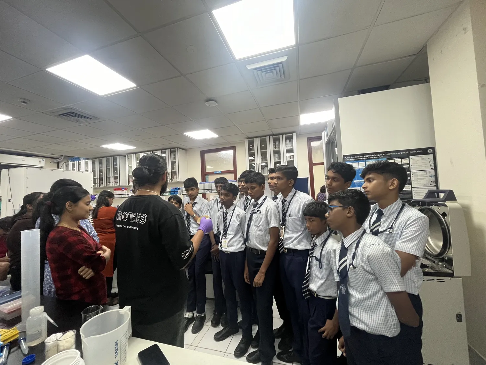
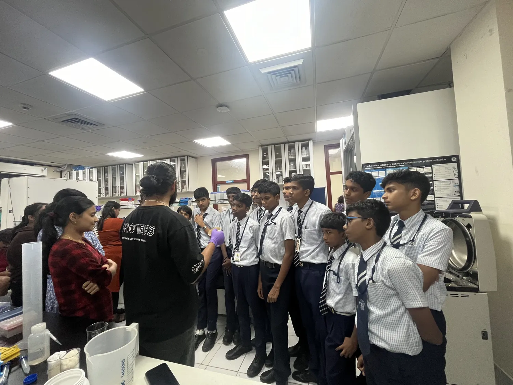

About Us
Proteus, the Biology Club of IISER Thiruvananthapuram, is formed by a group of passionate and enthusiastic individuals who love biology. We aim to spread knowledge of the various fields in biology and foster an appreciation for the subject among students. The club conducts multiple events throughout the academic year, ranging from academic discussions and internship guidance sessions to fun-filled treasure hunts. The club also hosts various researchers every year from different fields of biology as part of our symposium “Rhetor” to promote active scientific exchange and networking within the community. To bring the excitement of biology to schools across India, the club also runs an outreach initiative known as Shiksha.
Events & Initiatives
- Symposium "Rhetor"
- Discuss, Network, Ask (DNA) session
- Outreach Initiative "Shiksha"
- Faculty Talk Series (FTS)
- Internship Guidance Sessions
- Model Organism Talk Series (MOTS)
Gallery


 


Get in Touch
Follow us on our social media channels to stay updated!